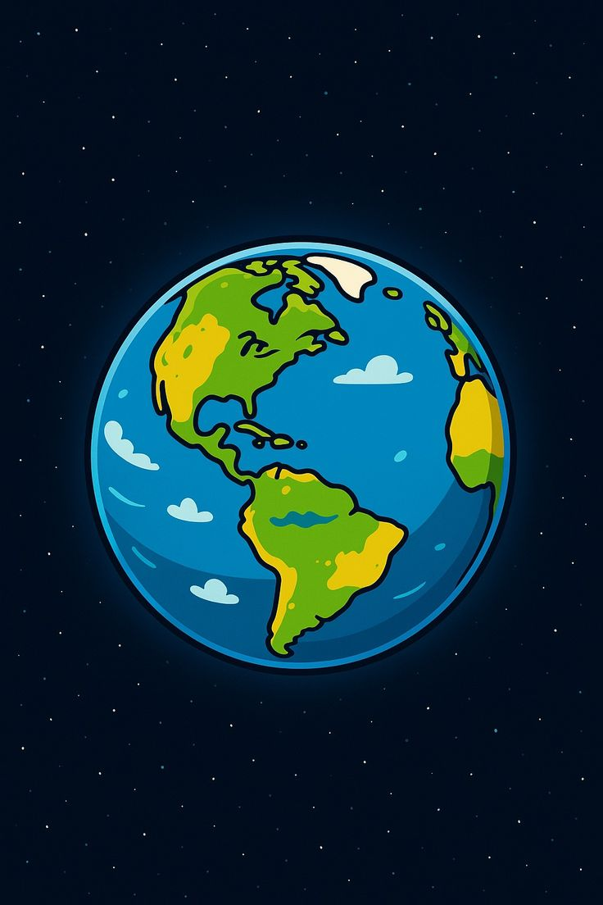
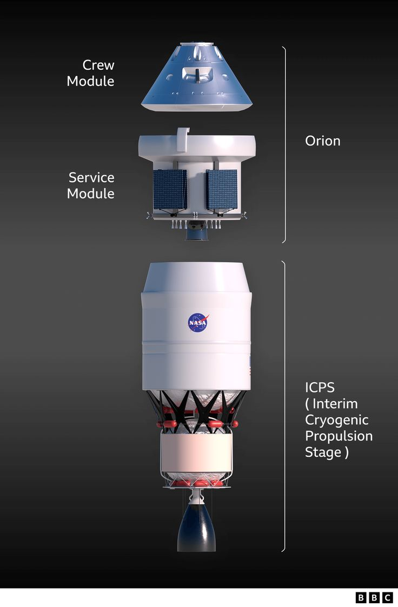

Only missions to do

Artemis 1 successfully tested the Space Lauch System rocket and the Orion spacecraft without astronauts onboard.
Artemis 2 will be the first crewed Artemis mission.Four astronaunts will travel around the moon before safely Returning to Earth.
Artemis 3 aims to land astronaunts near the Moons's south pole,marking humanity's return to the lunar surface after more than 50 years.

Future Artemis missions will help build the Lunar Gateway,support long-term lunar exploration,and prepare for missions to Mars